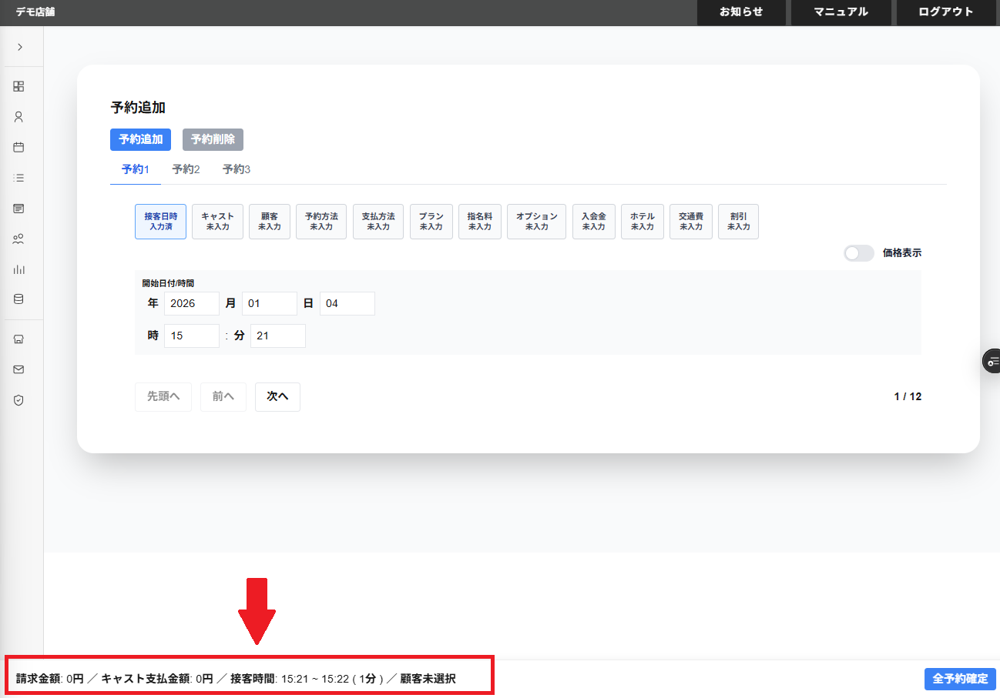

予約追加の画面の最下部(フッダー)に以下の項目が表示されます。
・請求金額
選択している予約のタブの合計の請求金額が表示されます。
・キャスト支払金額
選択している予約のタブの合計のキャスト支払金額が表示されます。
・ 接客時刻
選択している予約のタブの合計の接客時刻が表示されます。
接客時刻が0分以下になる場合は接客時刻は1分として表示されます。
・(一人目の顧客) 来店回数
選択している予約のタブの顧客の店舗への来店回数が表示されます。
複数人の顧客が選択されている場合は、選択中顧客の画面の最左側に表示されている顧客の店舗への来店回数が表示されます。
